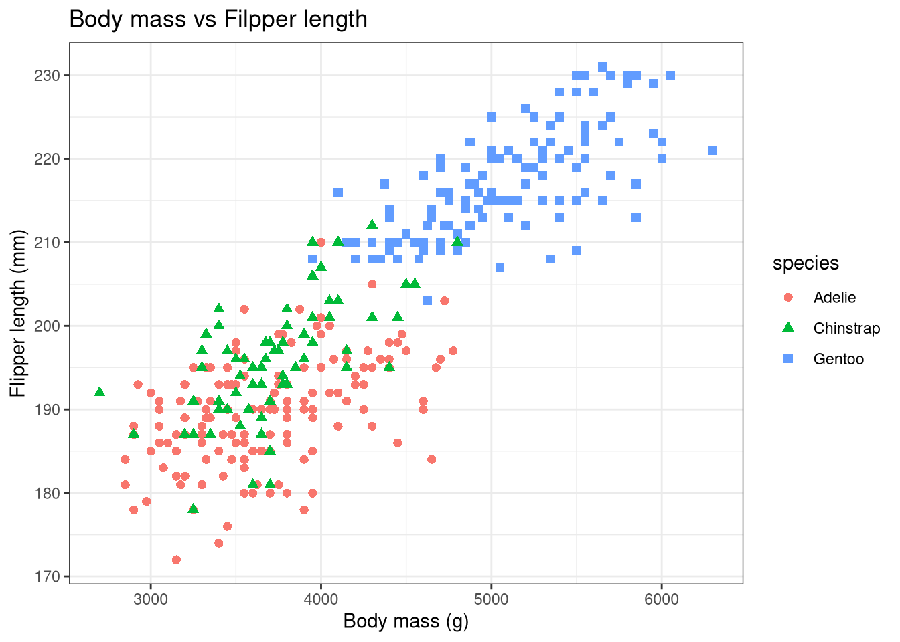
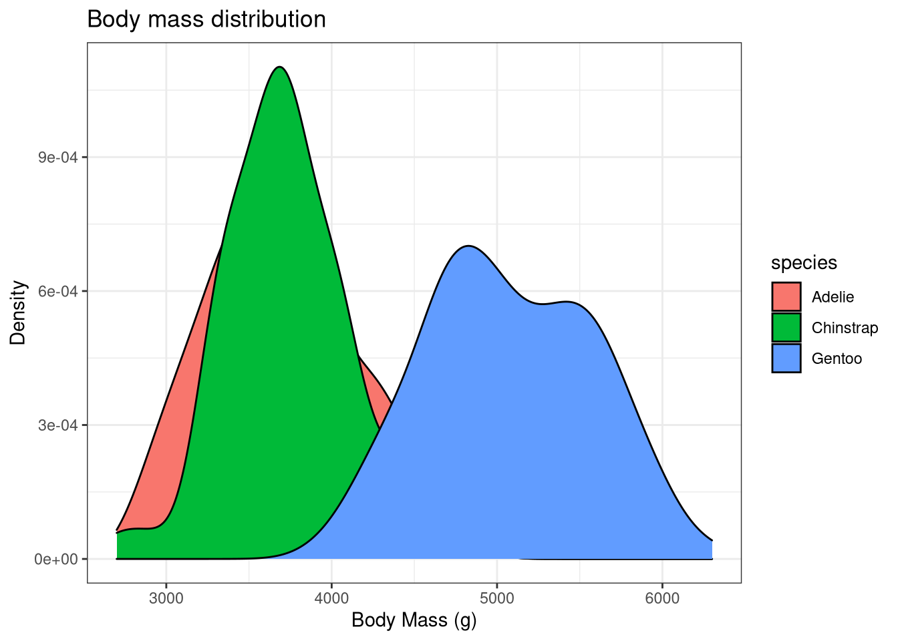
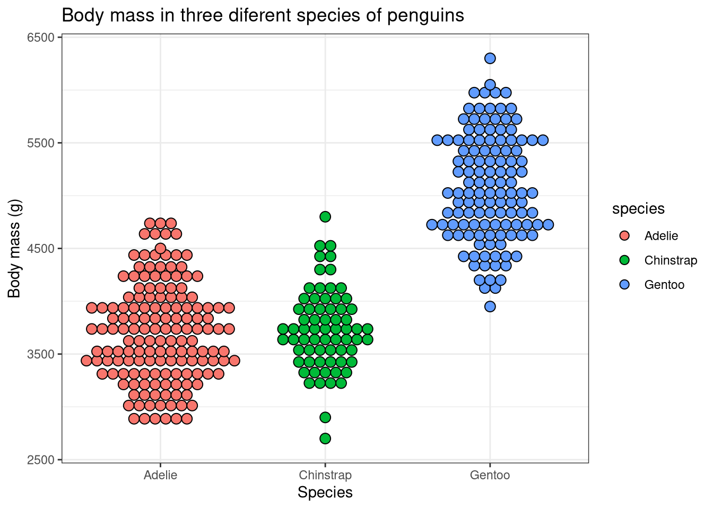

Data visualization using ggplot2
Jewel Johnson
Last updated on 01 December, 2021
In this tutorial we will be plotting different types of graphs using the package ggplot2 in R. The ggplot2 is an excellent package which can used to create beautiful data visualizations. It uses different aesthetics and build layers over it to make a graph.
This tutorial is primarily focused on students who are beginners in R programming and want to quickly plot their data without much of a hassle. So without further ado let’s get started!
Setting up the prerequisites
First we need to install ggplot2 package in R as it does not come in the standard distribution of R.
- To install packages in R we use the command
install.packages()and to load packages we use the commandlibrary(). Therefore to install and loadggplot2package we use the following lines of command.
install.packages("ggplot2")
library(ggplot2)All right we have the ggplot2 package loaded, now we just need some data to plot. So for plotting we will be using the iris dataset. No I am just kidding we won’t be using one of the most used dataset for this R tutorial. Instead, let me introduce you to the ‘penguins’ from Palmer Station in Antarctica!
So for this tutorial we will be installing the palmerpenguins package which showcases body measurements taken from three different species of penguins from Antarctica. This package was made possible by the efforts of Dr. Allison Horst. You can read more about the package here.
- Install the
palmerpenguinspackage and load it in R.
install.packages("palmerpenguins")
library(palmerpenguins)Now there are two datasets in this package. We will be using the penguins dataset which is a simplified version of the raw-data. Use the command head() to display the first few values of penguins dataset to see how the dataset looks like
library(palmerpenguins)
head(penguins)## # A tibble: 6 × 8
## species island bill_length_mm bill_depth_mm flipper_length_… body_mass_g sex
## <fct> <fct> <dbl> <dbl> <int> <int> <fct>
## 1 Adelie Torge… 39.1 18.7 181 3750 male
## 2 Adelie Torge… 39.5 17.4 186 3800 fema…
## 3 Adelie Torge… 40.3 18 195 3250 fema…
## 4 Adelie Torge… NA NA NA NA <NA>
## 5 Adelie Torge… 36.7 19.3 193 3450 fema…
## 6 Adelie Torge… 39.3 20.6 190 3650 male
## # … with 1 more variable: year <int>We can see that are 8 columns of data. Now let us try plotting some graphs with this data.
1. Bar graph
So we will try to plot a simple bar graph first. From the bar graph we will see how many individuals are there for each of the three species of penguins. We will be using the geom_bar() command to plot the bar graph. Let us also use the command theme_bw() for the nice aesthetics.
library(ggplot2)
library(palmerpenguins)
ggplot(data = penguins, aes(x = species, fill = species)) +
xlab("Species") + ylab("Frequency") +
ggtitle("Frequency of individuals for each species") +
geom_bar() + theme_bw()
Bar graphs are used to represent categorical data where the height of the rectangular bar represents the value for that category.
2. Histogram
Histograms are similar to bar graphs visually. But histograms are used to represent continuous data. Also the all the rectangular bars will have same bin size or width. We can plot a histogram using the command geom_histogram.
library(ggplot2)
library(palmerpenguins)
ggplot(data = penguins, aes(x = body_mass_g, fill = species)) +
xlab("Body Mass (g)") + ylab("Frequency") +
ggtitle("Frequency of individuals for respective body mass") +
geom_histogram(bins = 25) + theme_bw()The warning indicates that 2 for the rows had NA values which is by it could not be plotted.
3. Density Plot
Density plots is similar to histograms but shows it shows the overall distribution of the data in a finer way. This way we will get a bell shaped curve if our data follows a normal distribution. Use the geom_density command to plot it.
library(ggplot2)
library(palmerpenguins)
ggplot(data = penguins, aes(x = body_mass_g, fill = species)) +
xlab("Body Mass (g)") + ylab("Density") + ggtitle("Body mass distribution") +
geom_density() + theme_bw()Since we plotted for all three species the graph looks clustered. Let us try plotting the same graph for gentoo penguins alone. We will use the dplyr package to filter data for gentoo penguins alone. Load the dplyr package using the command library().
library(ggplot2)
library(palmerpenguins)
library(dplyr)
penguins_gentoo <- penguins %>% filter(species == "Gentoo")
ggplot(data = penguins_gentoo, aes(x = body_mass_g)) +
xlab("Body Mass of Gentoo penguins (g)") + ylab("Density") +
ggtitle("Body mass distribution of Gentoo penguins") +
geom_density(fill = "red") + theme_bw()
4. Line graph
Line graph simply joins together data points to show overall distribution. Use the command geom_line for plotting a line graph.
library(ggplot2)
library(palmerpenguins)
ggplot(data = penguins, aes(x = bill_length_mm,
y = bill_depth_mm, colour = species)) +
xlab("Bill length (mm)") + ylab("Bill depth (mm)") +
ggtitle("Bill length vs Bill depth") + geom_line() + theme_bw()
5. Scatter plot
Scatter plot simply denotes the data points in the dataset. Use the geom_point command to plot a scatter plot.
library(ggplot2)
library(palmerpenguins)
ggplot(data = penguins, aes(x = body_mass_g, y = flipper_length_mm,
shape = species, colour = species)) +
xlab("Body mass (g)") + ylab("Flipper length (mm)") +
ggtitle("Body mass vs Filpper length") + geom_point(size = 2) + theme_bw()6. Box-plot
Box-plot is one of the better ways of showing data via quartiles. You can learn more about box-plots here. We can use the command geom_boxplot to plot a box-plot.
library(ggplot2)
library(palmerpenguins)
ggplot(data = penguins, aes(x = species, y = body_mass_g, colour = species)) +
xlab("Species") + ylab("Body mass (g)") +
ggtitle("Body mass in three diferent species of penguins") + geom_boxplot() +
theme_bw()